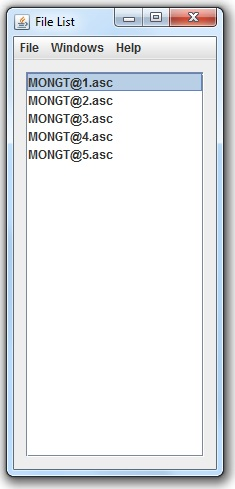
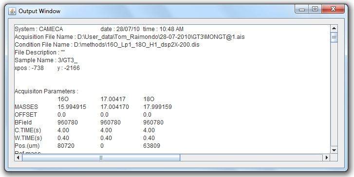

SIMS Manual
View file contents
Step 1
To view the contents of a file, select the desired file from the File List

The contents of the file will appear in the "Output Window" as shown below:

Return to menu